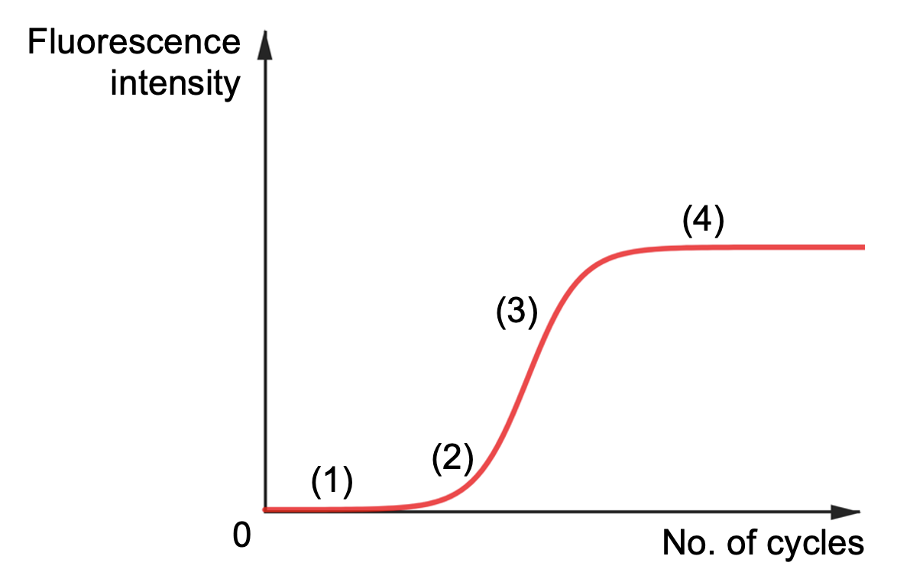

Section 1: Amplification Plot
1.2 Concept Review

The amplification plot usually has a sigmoid shape, and consists of 4 main stages:
- Ground phase (or baseline phase) - reaction is stabilizing and the amount of PCR product is little. Low fluorescence level is detected, mainly from background.
- Exponential phase - PCR product begins to amplify, doubling each time.
- Linear phase - the reactants in the sample (e.g. primers, dNTPs) limits the rate of amplification.
- Plateau phase - all the reactants in the sample are used up and the amount of PCR product tails off, ending with a plateau.
The fluorescence threshold level needs to be set at a level that all the curves can cut across during the exponential phase. In the exponential phase, there is a linear relationship between the fluorescence level and the number of cycles.
In the next section, you can set different parameters that could influence the shape of the graph using
interactive sliders.
- Threshold fluorescence level
- Amount of RNA contained in the target sample (Rate of gene expression)
The amplification curve for housekeeping gene is fixed, since it is used as a control.
The number of cycles taken to reach the fluorescence threshold is the cycle threshold(Ct) value.
The higher the Ct value, the less target mRNA there is in the sample.